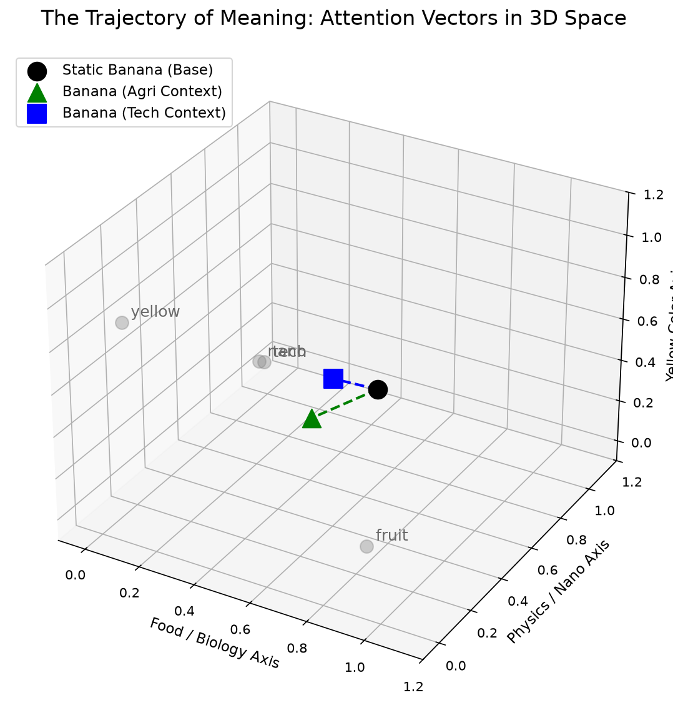

A live record of the gap between understanding something and being able to build it—closing, week by week, in public. No tutorials. No shortcuts. Just a blank file, the Chinchilla paper, and a question that won't leave.

Attention vectors in 3D space — one word, two contextsKampala, Uganda · 11 PM
A student opens a terminal. No Jupyter tutorial. No course to follow. Just a blank .py file, the Chinchilla paper, and a question that won't leave them alone:
“I understand how transformers work. But can I actually build one—from the matrix multiply up—that trains, that converges, that I can debug when it breaks?”
That's what this repo is. Not a collection of finished projects. A live record of the gap between understanding something and being able to build it—closing, week by week, in public.
The Principles
Not a tutorial collection. A build journal with a point of view. These four rules keep it honest.
Every folder in implementations/ started as a blank file, not a copy of someone else's code. The point is not the output—it's the hour where nothing works and you have to figure out why.
Every experiment has a README written before the notebook. What am I expecting? Why? What would change my mind? This is what research actually is—not running code, but framing the question.
A portfolio that only shows polished work is a highlight reel. The learning log tracks what I don't understand yet—because the real signal is in what broke.
Every paper in paper_notes/ was read in full—abstract, methods, experiments, limitations. Blog posts are for after. The primary literature is the minimum bar.
The Map
Seven directories, one pipeline. Each folder has a job, and no two folders do the same job.
the-residual-stream/ │ ├── foundations/ Mathematical bedrock. SVD, backprop by hand, KL divergence. │ ├── linear_algebra/ │ ├── calculus/ │ ├── probability/ │ └── ml_prerequisites/ Runnable notebooks: ML prerequisites from scratch │ ├── implementations/ Papers → running code. JAX only. No shortcuts. │ ├── 01_bpe_tokenizer/ Byte Pair Encoding from the 1994 paper │ ├── 02_transformer/ Attention Is All You Need (in progress) │ ├── 03_training_loop/ Forward pass → loss → backprop → Adam │ ├── 04_lora/ Low-rank adaptation from Hu et al. 2021 (planned) │ └── 05_scaling_laws/ Chinchilla scaling laws (planned) │ ├── experiments/ Hypothesis → result → write-up. │ ├── 01_tokenization_tax/ Does Luganda really cost 3× more tokens? │ └── 02_warmup_ablation/ How bad is training without LR warmup? (planned) │ ├── paper_notes/ Structured notes on every paper read ├── weekly_builds/ One complete, working thing per week ├── lectures_exercises/ MIT CSAIL masterclass materials ├── research_papers/ Raw PDFs and primary reading └── scratch/ Throwaway scripts and one-off explorations
The 8-Week Arc
A structured but flexible arc. Every week has a target. Some weeks you build. Some weeks you read. Some weeks things break and you learn more than the weeks they worked.
The Reading List
Every paper read in full—abstract through limitations. Blog posts are for after. The primary literature is the minimum bar.
Currently in the Stream
What's being built right now, what's being read, and what's blocking progress. Updated every week.